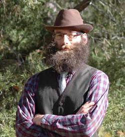

Frédérique Aït-Touati
Centre de Recherche sur les Arts et le Langage
Le Centre national de la recherche scientifique
Ruha Benjamin
Center for African American Studies
Princeton University
Stephanie Dick
Society of Fellows (History of Science)
Harvard University
Oliver Gaycken
Department of English
Film Studies
University of Maryland

Fred Gibbs
History Department
University of New Mexico
Michael D. Gordin
History Department
Program in the History of Science
Princeton University
Nikolai Krementsov
Institute for the History & Philosophy of Science & Technology
University of Toronto
Patrick McCray
Department of History
University of California, Santa Barbara
Erika Lorraine Milam
Department of History
Program in the History of Science
Princeton University
Colin Milburn
Departments of English, Science and Technology Studies
Cinema and Technocultural Studies
University of California, Davis
Projit Mukharji
Department of History & Sociology of Science
University of Pennsylvania

Michelle Murphy
Department of History
Women and Gender Studies Institute
University of Toronto
Joanna Radin
Section for the History of Medicine
Yale University